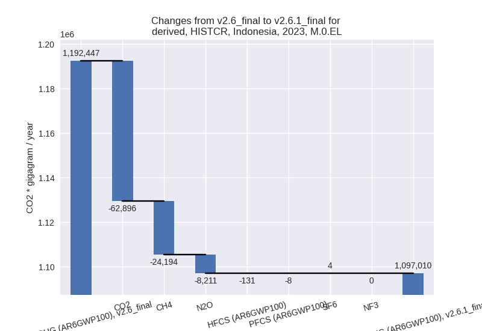

Changes in PRIMAP-hist v2.6.1_final compared to v2.6_final for Indonesia
2025-03-19
Johannes Gütschow
Change analysis for Indonesia for PRIMAP-hist v2.6.1_final compared to v2.6_final
Overview over emissions by sector and gas
The following figures show the aggregate national total emissions excluding LULUCF AR6GWP100 for the country reported priority scenario. The dotted linesshow the v2.6_final data.
The following figures show the aggregate national total emissions excluding LULUCF AR6GWP100 for the third party priority scenario. The dotted linesshow the v2.6_final data.
Overview over changes
In the country reported priority scenario we have the following changes for aggregate Kyoto GHG and national total emissions excluding LULUCF (M.0.EL):
- Emissions in 2023 have changed by -8.0%% (-95436.60 Gg CO2 / year)
- Emissions in 1990-2023 have changed by -1.9%% (-12825.81 Gg CO2 / year)
In the third party priority scenario we have the following changes for aggregate Kyoto GHG and national total emissions excluding LULUCF (M.0.EL):
- Emissions in 2023 have changed by -0.5%% (-6433.50 Gg CO2 / year)
- Emissions in 1990-2023 have changed by -5.2%% (-40109.97 Gg CO2 / year)
Most important changes per scenario and time frame
In the country reported priority scenario the following sector-gas combinations have the highest absolute impact on national total KyotoGHG (AR6GWP100) emissions in 2023 (top 5):
- 1: 1.A, CO2 with -59299.54 Gg CO2 / year (-7.8%)
- 2: 4, CH4 with -44211.31 Gg CO2 / year (-24.8%)
- 3: M.AG.ELV, N2O with -14936.49 Gg CO2 / year (-30.9%)
- 4: 3.A, CH4 with 10578.55 Gg CO2 / year (36.3%)
- 5: 3.A, N2O with 4806.79 Gg CO2 / year (70.8%)
In the country reported priority scenario the following sector-gas combinations have the highest absolute impact on national total KyotoGHG (AR6GWP100) emissions in 1990-2023 (top 5):
- 1: 4, CH4 with -17687.50 Gg CO2 / year (-19.0%)
- 2: 3.A, CH4 with 8343.77 Gg CO2 / year (37.4%)
- 3: 1.A, CO2 with 7281.64 Gg CO2 / year (2.0%)
- 4: M.AG.ELV, N2O with -7228.77 Gg CO2 / year (-22.5%)
- 5: M.AG.ELV, CH4 with -6261.12 Gg CO2 / year (-11.6%)
In the third party priority scenario the following sector-gas combinations have the highest absolute impact on national total KyotoGHG (AR6GWP100) emissions in 2023 (top 5):
- 1: 1.B.1, CH4 with 44287.87 Gg CO2 / year (24.2%)
- 2: 4, CH4 with -37165.98 Gg CO2 / year (-43.4%)
- 3: 1.B.2, CH4 with -14513.30 Gg CO2 / year (-47.4%)
- 4: M.AG.ELV, N2O with -4594.50 Gg CO2 / year (-8.1%)
- 5: 2, CO2 with 4005.08 Gg CO2 / year (8.3%)
In the third party priority scenario the following sector-gas combinations have the highest absolute impact on national total KyotoGHG (AR6GWP100) emissions in 1990-2023 (top 5):
- 1: 4, CH4 with -21405.92 Gg CO2 / year (-39.0%)
- 2: 1.B.2, CH4 with -20562.94 Gg CO2 / year (-40.5%)
- 3: 1.B.1, CH4 with 1836.37 Gg CO2 / year (2.6%)
- 4: 2, CO2 with 626.10 Gg CO2 / year (1.9%)
- 5: M.AG.ELV, N2O with -308.85 Gg CO2 / year (-0.8%)
Notes on data changes
Here we list notes explaining important emissions changes for the country.
- CRT data from BTR1 covering 2000-2022 has been added. It replaces
and extends BURs 1-3. Additionally we use UNFCCC DI data for 1990-1994
for some sectors (for other sectors the data is not consistent with
BTR1, e.g. in the waste sector)
- Emissions are significantly lower for 2023 in the CR scenario. The main reasons are lower emissions in 1.A (CO2), 4 (CH4), and M.AG.ELV (N2O). Emissions in 3.A are higher for CH4 and N2O.
- For cumulative emissions CO2 in 1.A has a small positive contribution while contributions from the other sectors differ in magnitude but the direction si the same as for 2023 emissions.
- Aggregate changes for the TP scenario are small for 2023 because
individual sector changes cancel.
- Changes in the TP time-series come from updated EDGAR and FAO data. FAO has adjusted data for the latest years while EDGAR has updated full time-series with the main change coming from fugitive emissions and the waste sector. For cumulative emissions the higher emission in 1.B.1, CH4 post 2021 play a smaller role and total emissions are lower then in PRIMAP-hist v2.6
Changes by sector and gas
For each scenario and time frame the changes are displayed for all individual sectors and all individual gases. In the sector plot we use aggregate Kyoto GHGs in AR6GWP100. In the gas plot we usenational total emissions without LULUCF.
country reported scenario
2023

1990-2023
third party scenario
2023
1990-2023
Detailed changes for the scenarios:
country reported scenario (HISTCR):
Most important changes per time frame
For 2023 the following sector-gas combinations have the highest absolute impact on national total KyotoGHG (AR6GWP100) emissions in 2023 (top 5):
- 1: 1.A, CO2 with -59299.54 Gg CO2 / year (-7.8%)
- 2: 4, CH4 with -44211.31 Gg CO2 / year (-24.8%)
- 3: M.AG.ELV, N2O with -14936.49 Gg CO2 / year (-30.9%)
- 4: 3.A, CH4 with 10578.55 Gg CO2 / year (36.3%)
- 5: 3.A, N2O with 4806.79 Gg CO2 / year (70.8%)
For 1990-2023 the following sector-gas combinations have the highest absolute impact on national total KyotoGHG (AR6GWP100) emissions in 1990-2023 (top 5):
- 1: 4, CH4 with -17687.50 Gg CO2 / year (-19.0%)
- 2: 3.A, CH4 with 8343.77 Gg CO2 / year (37.4%)
- 3: 1.A, CO2 with 7281.64 Gg CO2 / year (2.0%)
- 4: M.AG.ELV, N2O with -7228.77 Gg CO2 / year (-22.5%)
- 5: M.AG.ELV, CH4 with -6261.12 Gg CO2 / year (-11.6%)
Changes in the main sectors for aggregate KyotoGHG (AR6GWP100) are
- 1: Total sectoral emissions in 2022 are 738839.89
Gg CO2 / year which is 67.6% of M.0.EL emissions. 2023 Emissions have
changed by -7.3% (-57894.96 Gg CO2 /
year). 1990-2023 Emissions have changed by 2.1% (8911.01 Gg CO2 / year). For 2023 the
changes per gas
are:
For 1990-2023 the changes per gas are:
The changes come from the following subsectors:- 1.A: Total sectoral emissions in 2022 are 715571.12
Gg CO2 / year which is 96.9% of category 1 emissions. 2023 Emissions
have changed by -7.3% (-56186.06 Gg
CO2 / year). 1990-2023 Emissions have changed by 2.3% (8838.96 Gg CO2 / year). For 2023 the
changes per gas
are:
For 1990-2023 the changes per gas are:
There is no subsector information available in PRIMAP-hist. - 1.B.1: Total sectoral emissions in 2022 are 4255.31
Gg CO2 / year which is 0.6% of category 1 emissions. 2023 Emissions have
changed by -39.9% (-3177.10 Gg CO2 /
year). 1990-2023 Emissions have changed by -37.8% (-1251.24 Gg CO2 / year). For 2023
the changes per gas
are:
For 1990-2023 the changes per gas are:
There is no subsector information available in PRIMAP-hist. - 1.B.2: Total sectoral emissions in 2022 are
19013.47 Gg CO2 / year which is 2.6% of category 1 emissions. 2023
Emissions have changed by 8.1%
(1468.19 Gg CO2 / year). 1990-2023 Emissions have changed by 3.8% (1323.29 Gg CO2 / year). For 2023 the
changes per gas
are:
For 1990-2023 the changes per gas are:
There is no subsector information available in PRIMAP-hist.
- 1.A: Total sectoral emissions in 2022 are 715571.12
Gg CO2 / year which is 96.9% of category 1 emissions. 2023 Emissions
have changed by -7.3% (-56186.06 Gg
CO2 / year). 1990-2023 Emissions have changed by 2.3% (8838.96 Gg CO2 / year). For 2023 the
changes per gas
are:
- 2: Total sectoral emissions in 2022 are 75709.01 Gg
CO2 / year which is 6.9% of M.0.EL emissions. 2023 Emissions have
changed by 5.1% (3828.89 Gg CO2 /
year). 1990-2023 Emissions have changed by -2.1% (-988.29 Gg CO2 / year). For 2023
the changes per gas
are:
For 1990-2023 the changes per gas are: - M.AG: Total sectoral emissions in 2022 are
136561.00 Gg CO2 / year which is 12.5% of M.0.EL emissions. 2023
Emissions have changed by 2.0%
(2653.81 Gg CO2 / year). 1990-2023 Emissions have changed by -2.5% (-3020.56 Gg CO2 / year). For
1990-2023 the changes per gas
are:
The changes come from the following subsectors:- 3.A: Total sectoral emissions in 2022 are 50517.28
Gg CO2 / year which is 37.0% of category M.AG emissions. 2023 Emissions
have changed by 42.8% (15385.34 Gg
CO2 / year). 1990-2023 Emissions have changed by 40.0% (11255.82 Gg CO2 / year). For 2023
the changes per gas
are:

For 1990-2023 the changes per gas are:
There is no subsector information available in PRIMAP-hist. - M.AG.ELV: Total sectoral emissions in 2022 are
86043.72 Gg CO2 / year which is 63.0% of category M.AG emissions. 2023
Emissions have changed by -13.0%
(-12731.53 Gg CO2 / year). 1990-2023 Emissions have changed by -15.5% (-14276.38 Gg CO2 / year). For 2023
the changes per gas
are:
For 1990-2023 the changes per gas are:
There is no subsector information available in PRIMAP-hist.
- 3.A: Total sectoral emissions in 2022 are 50517.28
Gg CO2 / year which is 37.0% of category M.AG emissions. 2023 Emissions
have changed by 42.8% (15385.34 Gg
CO2 / year). 1990-2023 Emissions have changed by 40.0% (11255.82 Gg CO2 / year). For 2023
the changes per gas
are:
- 4: Total sectoral emissions in 2022 are 138480.55
Gg CO2 / year which is 12.7% of M.0.EL emissions. 2023 Emissions have
changed by -24.4% (-45111.94 Gg CO2
/ year). 1990-2023 Emissions have changed by -18.2% (-17739.51 Gg CO2 / year). For 2023
the changes per gas
are:

For 1990-2023 the changes per gas are: - 5: Total sectoral emissions in 2022 are 4073.34 Gg
CO2 / year which is 0.4% of M.0.EL emissions. 2023 Emissions have
changed by 28.6% (1087.60 Gg CO2 /
year). 1990-2023 Emissions have changed by 0.3% (11.53 Gg CO2 / year). For 2023 the
changes per gas
are:
third party scenario (HISTTP):
Most important changes per time frame
For 2023 the following sector-gas combinations have the highest absolute impact on national total KyotoGHG (AR6GWP100) emissions in 2023 (top 5):
- 1: 1.B.1, CH4 with 44287.87 Gg CO2 / year (24.2%)
- 2: 4, CH4 with -37165.98 Gg CO2 / year (-43.4%)
- 3: 1.B.2, CH4 with -14513.30 Gg CO2 / year (-47.4%)
- 4: M.AG.ELV, N2O with -4594.50 Gg CO2 / year (-8.1%)
- 5: 2, CO2 with 4005.08 Gg CO2 / year (8.3%)
For 1990-2023 the following sector-gas combinations have the highest absolute impact on national total KyotoGHG (AR6GWP100) emissions in 1990-2023 (top 5):
- 1: 4, CH4 with -21405.92 Gg CO2 / year (-39.0%)
- 2: 1.B.2, CH4 with -20562.94 Gg CO2 / year (-40.5%)
- 3: 1.B.1, CH4 with 1836.37 Gg CO2 / year (2.6%)
- 4: 2, CO2 with 626.10 Gg CO2 / year (1.9%)
- 5: M.AG.ELV, N2O with -308.85 Gg CO2 / year (-0.8%)
Changes in the main sectors for aggregate KyotoGHG (AR6GWP100) are
- 1: Total sectoral emissions in 2022 are 1068179.00
Gg CO2 / year which is 78.8% of M.0.EL emissions. 2023 Emissions have
changed by 2.9% (31146.40 Gg CO2 /
year). 1990-2023 Emissions have changed by -3.5% (-18740.99 Gg CO2 / year). For 2023
the changes per gas
are:
For 1990-2023 the changes per gas are:
The changes come from the following subsectors:- 1.A: Total sectoral emissions in 2022 are 841657.55 Gg CO2 / year which is 78.8% of category 1 emissions. 2023 Emissions have changed by 0.0% (325.26 Gg CO2 / year). 1990-2023 Emissions have changed by -0.0% (-59.20 Gg CO2 / year).
- 1.B.1: Total sectoral emissions in 2022 are
206690.59 Gg CO2 / year which is 19.3% of category 1 emissions. 2023
Emissions have changed by 24.2%
(45330.05 Gg CO2 / year). 1990-2023 Emissions have changed by 2.6% (1879.07 Gg CO2 / year). For 2023 the
changes per gas
are:

For 1990-2023 the changes per gas are:
There is no subsector information available in PRIMAP-hist. - 1.B.2: Total sectoral emissions in 2022 are
19830.87 Gg CO2 / year which is 1.9% of category 1 emissions. 2023
Emissions have changed by -41.7%
(-14508.87 Gg CO2 / year). 1990-2023 Emissions have changed by -35.0% (-20560.86 Gg CO2 / year). For 2023
the changes per gas
are:
For 1990-2023 the changes per gas are:
There is no subsector information available in PRIMAP-hist.
- 2: Total sectoral emissions in 2022 are 69474.82 Gg
CO2 / year which is 5.1% of M.0.EL emissions. 2023 Emissions have
changed by 5.7% (3897.83 Gg CO2 /
year). 1990-2023 Emissions have changed by 1.5% (619.41 Gg CO2 / year). For 2023 the
changes per gas
are:
- M.AG: Total sectoral emissions in 2022 are
161653.59 Gg CO2 / year which is 11.9% of M.0.EL emissions. 2023
Emissions have changed by -3.3%
(-5477.57 Gg CO2 / year). 1990-2023 Emissions have changed by -0.4% (-601.18 Gg CO2 / year). For 2023
the changes per gas
are:
The changes come from the following subsectors:- 3.A: Total sectoral emissions in 2022 are 41662.66 Gg CO2 / year which is 25.8% of category M.AG emissions. 2023 Emissions have changed by -2.0% (-857.25 Gg CO2 / year). 1990-2023 Emissions have changed by -0.2% (-74.14 Gg CO2 / year).
- M.AG.ELV: Total sectoral emissions in 2022 are
119990.92 Gg CO2 / year which is 74.2% of category M.AG emissions. 2023
Emissions have changed by -3.7%
(-4620.32 Gg CO2 / year). 1990-2023 Emissions have changed by -0.5% (-527.04 Gg CO2 / year). For 2023
the changes per gas
are:
There is no subsector information available in PRIMAP-hist.
- 4: Total sectoral emissions in 2022 are 51523.06 Gg
CO2 / year which is 3.8% of M.0.EL emissions. 2023 Emissions have
changed by -41.6% (-37087.80 Gg CO2
/ year). 1990-2023 Emissions have changed by -37.3% (-21398.73 Gg CO2 / year). For 2023
the changes per gas
are:
For 1990-2023 the changes per gas are: - 5: Total sectoral emissions in 2022 are 4073.34 Gg
CO2 / year which is 0.3% of M.0.EL emissions. 2023 Emissions have
changed by 28.6% (1087.60 Gg CO2 /
year). 1990-2023 Emissions have changed by 0.3% (11.53 Gg CO2 / year). For 2023 the
changes per gas
are: